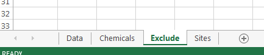
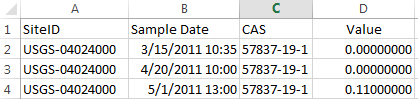

What kind of data could be used in a toxEval analysis? It was designed with concentration measurements from water samples as the primary use case. There may be other concentration measurements that could be used as well, but it is up to the researcher to determine if special considerations must be taken in those circumstances. For instance, there was a toxEval analysis done on the concentration of chemicals measured in eagle plasma.
For all cases within toxEval, a “sample” is considered a unique site/date. There are times when this might not be especially relavent to the data collection (passive samplers, groundwater samples at separate depths, etc.). The user will need to come up with strategies to deal with the limiting workflow. For example, single sites at different depths could add site suffixes (site_a_3m, site_a_6m, etc.). Passive samplers could use the start or end time as the sampling times.
Input data for toxEval should be prepared in a Microsoft ™ Excel file using specifically named sheets (also known as tabs). There are 3 mandatory sheets (Data, Chemical, Sites), and 2 optional sheets (Exclude, Benchmarks). The sheets should appear as follows (although the order is not important):

Each sheet has mandatory columns; the order of the columns is not important, but the names of the columns are important. Additional columns can be included but will be ignored. The top row of each sheet must contain the column names (headers), and the second row should begin with the data. That means no titles or comment rows should precede the data.
The “Data” sheet is used to define the measured concentrations to be evaluated in toxEval. Four columns are required in this sheet: “CAS”, “SiteID”, “Value”, and “Sample Date”. The columns can be in any order, but the first row of the sheet must be the header (column names).
CAS: A character column defining the chemicals via their Chemical Abstracts Service (CAS) registry. In the Excel file, pay special attention that no CAS are converted to a Date format. Highlight the column, right-click on the mouse, choose “Format Cells”, and choose “Text” as the category to assure they retain their format. The unique CAS values in this column must match with the CAS values in the “Chemicals” sheet.
SiteID: This character column identifies the sites (or sampling locations) of the measurement. The unique “SiteID” values must match the “SiteID” values in the “Sites” sheet. There are no requirements on formatting for this column.
Value: This column is numeric. It must be the concentration of the chemical in \(\mu\)g/L.
Sample Date: Currently this column only serves to identify unique samples. Dates and times as formatted in Excel, as well as integer values are acceptable. The actual date and times are not currently used to perform any time series analysis.
Note: Additional columns may be useful to organize the data. These additional columns will be ignored by toxEval and will not influence a toxEval analysis. For example, many data sets have detection level or censoring information. In this version of toxEval, that type of analysis is ignored. The censored data can be entered in the Value column as the detection level, or half the detection level, 0, or some other strategy…that is currently up to the researcher. This is a topic that could be re-evaluated in future versions of toxEval.
As an example, the first several rows of a minimal example would look like this:

The “Chemicals” sheet is used to define the unique chemicals included in the “Data” sheet (so, 1 row per unique chemical). Two columns are required in this sheet: “CAS” and “Class”. The columns can be in any order, but the first row of the sheet must be the header (column names). If you need chemical names that do not match up wiht the “tox_chemical” list provided in the package, you will want to include a 3rd column “Chemical” which is the chemical name to use for plots and tables.
CAS: A character column defining the chemicals via their Chemical Abstracts Service (CAS) registry. In the Excel file, pay special attention that no CAS are converted to a Date format. Highlight the column, right-click on the mouse, choose “Format Cells”, and choose “Text” as the category to assure they retain their format. The unique CAS values in this column must match with the CAS values in the “Data” sheet.
Class: A character column defining the class of chemicals. Most toxEval functions will allow groupings by either chemical, class (as defined here), or biological grouping. In the example data set provided with the package, the chemicals were organized in classes such as “Fuels”, “Herbicides”, “Insecticides”, etc. The choice of classes is up to the researcher. Chemical class analysis can be ignored, and in that case, it is just important to put a single repeating entry in the “Class” column.
Chemical (optional): A character column defining the name of the chemical. The chemical names can be automatically assigned from the supplied data frame “tox_chemicals”. However, there may be chemicals that are in your data but not on that list. If you will be plotting those chemicals using either concentrations or custom benchmarks, you will need to supply a name for plotting and tables.
Note: Additional columns may be useful to organize the data. These additional columns will be ignored by toxEval and will not influence a toxEval analysis.
The “Sites” sheet is used to define site information for locations where samples were collected. Four columns are required in this sheet: “SiteID”, “Short Name”, “dec_lon”, and “dec_lat”. The columns can be in any order, but the first row of the sheet must be the header (column names).
SiteID: This character column identifies the sites (or sampling locations) of the measurement. The unique “SiteID” values must match the “SiteID” values in the “Data” sheet. There are no requirements on formatting for this column.
Short Name: This character column is the name associated with the SiteID that will be used in the graphs and tables. The names should be sufficiently descriptive, but as short as possible to maximize the area on the graph devoted to the data rather than the labels.
dec_lon: This numeric column is the decimal longitude of the sampling location. It is mainly used for plotting the sampling locations on a map in the Shiny app. Most toxEval functions will not require this column.
dec_lat: This numeric column is the decimal latitude of the sampling location. It is mainly used for plotting the sampling locations on a map in the Shiny app. Most toxEval functions will not require this column.
site_grouping (optional): This character column is optional, and will group sites together for certain plots. For example, you may wish to group sites by watershed. The example data groups the sites together by which Great Lake they drain into.
Note: Additional columns may be useful to organize the data. These additional columns will be ignored by toxEval and will not influence a toxEval analysis.
At times, it may be appropriate to exclude endpoints, chemicals, or specific endpoint:chemical combinations from a data analysis due to lack of relevance to the study objective or low confidence in specific portions of the data. The “Exclude” sheet is used for this purpose.
The “Exclude” sheet is optional, but if used, two columns are required: “CAS” and “endPoint”. They can be in any order, but the first row of the sheet should be the header (column names).
Why would you choose to exclude a chemical/endpoint value? There are times that the dose-response curves from ToxCast may not trigger any automated flags, but upon inspection, the curves seem suspect. The easiest way to view the dose response curves is from the Comptox dashboard. The function endpoint_hits_DT includes an option to get a direct link to find the dose-response curves if the category is “Chemical”. This is handy to do quick checks on the endpoint/chemical combinations that produce the highest EARs. If the highest EAR values have dose-response curves that seem suspect, consider adding those to the “Exclude” tab, or at least trying to get more information on that endpoint/assay.
endPoint: A character column to define a specific endpoint to ignore in the analysis. If the “CAS” in the corresponding row is empty, the endPoint will be completely excluded from the toxEval analysis. For example, if it was decided that TOX21_p53_BLA_p3_ratio was not an appropriate endPoint to consider for a given analysis, it can be excluded by adding it to the Exclude sheet in the endPoint column. If the “CAS” in the corresponding row is NOT empty, only the specific chemical/endPoint combination will be excluded from the analysis.
CAS: A character column defining the chemicals via their Chemical Abstracts Service (CAS) registry. If the “endPoint” in the corresponding row is empty, the chemical will be completely excluded from the toxEval analysis. For example, consider that blank samples revealed that DEET was contaminated in the sampling method. All DEET measurements can be excluded by adding 134-62-3 to the Exclude sheet in the “CAS” column, leaving the “endPoint” column blank. If the “endPoint” in the corresponding row is NOT empty, only the specific chemical/endPoint combination will be excluded from the analysis.
Note: Additional columns may be useful to organize the data. These additional columns will be ignored by toxEval and will not influence a toxEval analysis.
The user may provide a set of concentration benchmarks to be used in place of the ToxCast database. For example, there may be a need to perform similar toxEval analysis using EPA aquatic life benchmarks to compare measured concentrations against established toxicity thresholds. The “Benchmarks” sheet is used for this purpose. For more information, see here.
The “Benchmarks” sheet is optional, but if used, five columns are required: “CAS”, “Chemical”, “endPoint”, “Value”, and “groupCol”. They can be in any order, but the first row of the sheet should be the header (column names).
CAS: A character column defining the chemicals via their Chemical Abstracts Service (CAS) registry.
Chemical: A character column defining the name of the chemicals.
endPoint: A character column naming the benchmark (e.g. “Acute”, “Chronic”).
Value: The concentration (in identical units as what is reported in the “Data” sheet) of the benchmark.
groupCol: A character column that groups endpoints. This is analogous to the Biological groupings from the ToxCast analysis (e.g. “Fish”, “Invertebrates”).
Note: Additional columns may be useful to organize the data. These additional columns will be ignored by toxEval and will not influence a toxEval analysis.
This software has been approved for release by the U.S. Geological Survey (USGS). Although the software has been subjected to rigorous review, the USGS reserves the right to update the software as needed pursuant to further analysis and review. No warranty, expressed or implied, is made by the USGS or the U.S. Government as to the functionality of the software and related material nor shall the fact of release constitute any such warranty. Furthermore, the software is released on condition that neither the USGS nor the U.S. Government shall be held liable for any damages resulting from its authorized or unauthorized use.
Any use of trade, firm, or product names is for descriptive purposes only and does not imply endorsement by the U.S. Government.